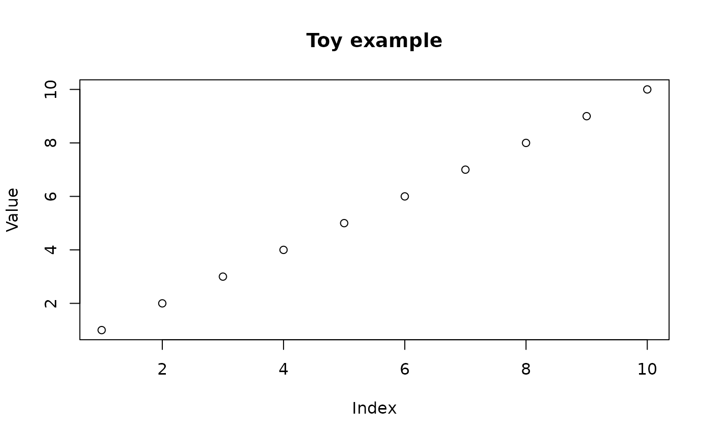

Tags an R object so that calling plot on it outside the
pipeline can still dispatch the correct S3 method, even though that
method is only defined inside the pipeline's shared R scripts.
Usage
pipeline_plot_data(
x,
name = substitute(x),
strip_oldclasses = TRUE,
pipe_dir = Sys.getenv("RAVE_PIPELINE", "."),
pipeline_name = NULL
)Arguments
- x
R object to be used as plot data.
- name
S3class name for whichplot.<name>is implemented in the pipeline'sR/shared*.Rfiles. Must contain only ASCII letters, digits, dots, or underscores. Defaults to the unevaluated expression passed asx.- strip_oldclasses
if
TRUE(default) andxalready carries a"ravepipeline_plot_data"class from a previous call, the stale plot classes are stripped before re-tagging. Set toFALSEto preserve the full original class vector.- pipe_dir
path to the active pipeline directory. Do not set this when calling from within a pipeline make-file; the default reads the
RAVE_PIPELINEenvironment variable which is set automatically duringpipeline_run.- pipeline_name
character string overriding the pipeline name stored in the returned object. When
NULL(default) the name is inferred frompipe_dir.
Value
Object x with the class vector
c(name, "ravepipeline_plot_data", <original classes>) and two
extra attributes: pipeline_name and pipeline_plot_class.
How plotting dispatch works
A RAVE pipeline keeps its plot helpers in files whose names start with
shared inside the pipeline's R/ folder (e.g.
R/shared-plots.R). Those files are sourced automatically every
time the pipeline runs, but they are not available in an ordinary
interactive R session.
pipeline_plot_data bridges the two contexts by:
Inserting
nameand the sentinel class"ravepipeline_plot_data"to the class vector ofx.Attaching the pipeline name as an attribute so the object can be re-associated with its pipeline later.
When plot() is subsequently called:
- Inside the pipeline (during
pipeline_run) The environment variable
RAVE_PIPELINE_ACTIVEis"true", the shared scripts have already been sourced, andplot.<name>is in scope.plot.ravepipeline_plot_datasimply callsNextMethod()so dispatch falls through toplot.<name>.- Outside the pipeline (interactive session, report, Shiny app)
plot.ravepipeline_plot_datalocates the pipeline bypipeline_name, calls$shared_env()to source allR/shared*.Rfiles in an isolated environment, and then evaluatesplot(x)inside that environment, whereplot.<name>is now available.
Implementing a pipeline plot method
Step 1: define the S3 method in any file whose name starts
with shared inside the pipeline's R/ directory (e.g.
R/shared-plots.R). The function receives the original object x
with its user-defined class prepended, so standard R dispatch applies:
# R/shared-plots.R (inside the pipeline source tree)
plot.my_pipeline_result <- function(x, ...) {
graphics::plot(
x$time, x$signal,
type = "l",
xlab = "Time (s)",
ylab = "Amplitude",
main = x$title
)
}Step 2: wrap the target inside main.Rmd (or any pipeline
make-file) by calling pipeline_plot_data with the same name
you used for the S3 method:
# main.Rmd (pipeline make-file target block)
result_plot <- {
ravepipeline::pipeline_plot_data(
list(time = seq(0, 1, by = 0.01),
signal = sin(2 * pi * 10 * seq(0, 1, by = 0.01)),
title = "10 Hz sine wave"),
name = "my_pipeline_result"
)
}Step 3: call plot() anywhere:
Examples
# 1. R/shared-plots.R -- define the S3 method
plot.toy_example <- function(x, ...) {
graphics::plot(x$data,
xlab = "Index", ylab = "Value",
main = x$title %||% "")
}
# 2. main.Rmd target block -- wrap the data
plot_data <- ravepipeline::pipeline_plot_data(
list(data = 1:10, title = "Toy example"),
name = "toy_example",
pipeline_name = "toy_pipeline"
)
# 3. Interactive session -- just call plot()
plot(plot_data) # dispatches to plot.toy_example via shared_env
